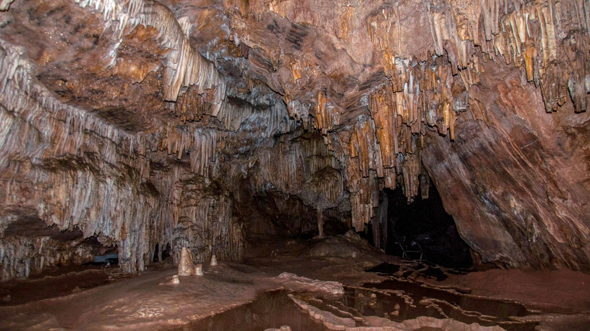
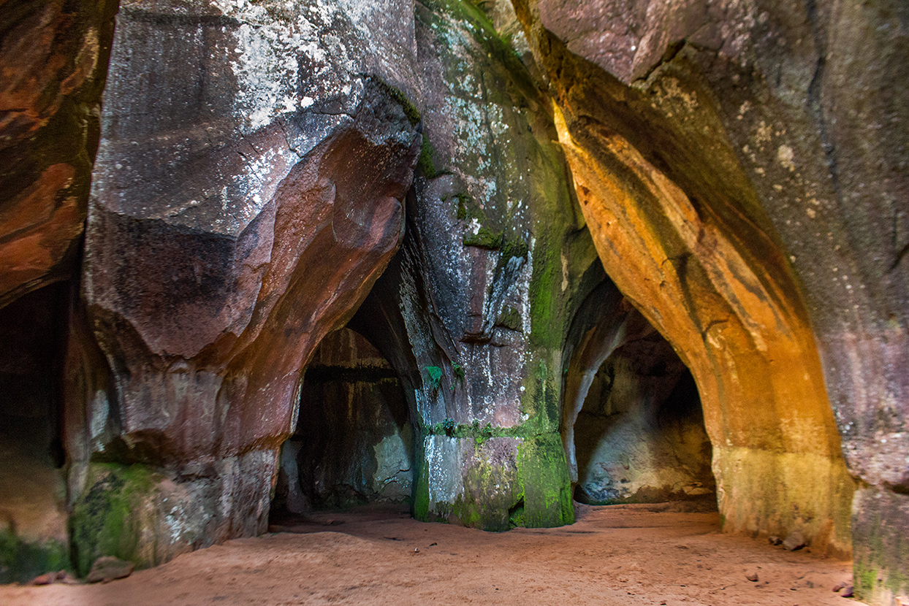
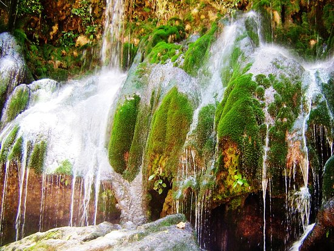
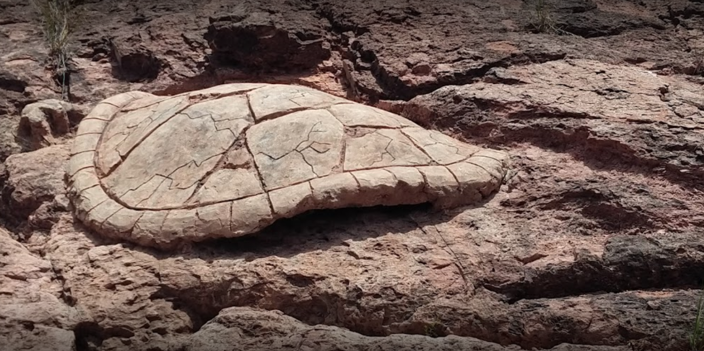

|  |
La Caverna de UmajalantaUbicada a 8 kilómetros al Oeste de Torotoro, en la comunidad de Huayra K’asa, es la caverna más extensa y profunda de Bolivia. Su nombre significa “el agua que se pierde en las profundidades de la tierra”. Está formada por grandes bóvedas, galerías y pasos estrechos. En su interior existen formaciones de estalactitas y estalagmitas, las cuales reciben distintos nombres como: árbol del sauce llorón, arbolito de navidad, la sala de conciertos, la virgen y el niño. En la bóveda extensa que está ubicada en la parte más profunda del recorrido, se halla una laguna o manantial donde viven pequeños peces ciegos que se pueden observar con facilidad. Se organizan visitas guiadas por pobladores capacitados o guardaparques. |
Ciudad de ItasUbicada a 21 Km de Torotoro, a 3500 msnm, es una formación rocosa que aparenta ser una ciudadela de piedra, con laberintos, evas gigantes y cavidades y el ingreso de los rayos del sol, generan efectos visuales únicos, también se pueden apreciar pinturas rupestres. |
 |
|  |
El Vergel y El Cañón de Torotoro.Se encuentra a 4 kilómetros de Torotoro. En el recorrido por este cañón se puede apreciar huellas de dinosaurios y formaciones geológicas. Descendiendo al Vergel los visitantes pueden tomar un baño en el rio de aguas cristalinas y observar la vegetación subtropical del área. Durante la caminata se aconseja estar atentos y pendientes para observar parabas frente roja y cóndores. |
Cementerio de tortugaUbicado a 4 kilómetros de Torotoro, en la comunidad de Molle Cancha, con las muestras en exposición se puede evidenciar la evolución geológica de la zona adyacente y del Parque, en exposición existen fósiles, tales como restos de tortugas y cráneos de cocodrilos prehistóricos. |
 |